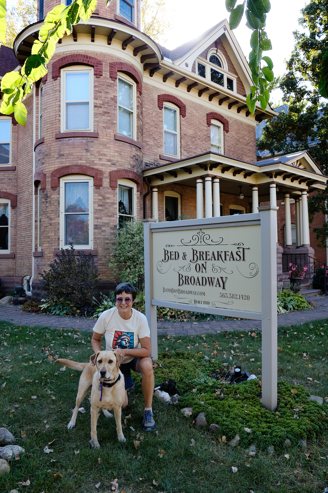

From Madison, I took a day trip to Iowa. Specifically, the town of Decorah, to visit Melissa Koch. I worked closely with Melissa about a decade ago at SRI International, and now she runs the wonderful Bed and Breakfast on Broadway with her husband, son, and dog. She’s cracked the code of the perfect small town life.

We started with a tour of the 1910, 5-bedroom inn. I enjoyed the period living room and main guest rooms upstairs. But then Melissa invited me up a narrow set of stairs to the top floor. It opened onto an amazing suite, with a turreted tower as the perfect reading room. What an amazing space! I’ll be back. Click any picture for bigger images.


Marty McFly would be at home in Decorah, although Back to the Future was set in California. It’s a perfect mid-century small town, which displays its pride in numerous history displays all about town. And if you like your perfect small town with organic, artisanal, hand-crafted, and if you need some “Impact Coffee” to wake up in the morning, this is your place. We first looked inside the county seat building:
At the clerk’s office, you can record all the events important to an upstanding Iowa citizen, and in a sensible order:
- Birth
- Get a fishing license
- Travel to Minnesota (you need a passport for that, right?)
- Buy a house
- Get a snowmobile
(Marriage and Death are recorded, too, but the timing of that was less clear to me.)
We wandered through the town, which features an extensive Norwegian museum called Vesterheim. A wonderful organic cafe served lunch bowls; I had one with Babaganoush. We also stopped by the Democratic headquarters, and I purchased some feminist postcards for Audrey. Click for bigger photos.


Next we achieved our 10,000 steps by taking a walk to the Iowa river; the Upper Iowa River to be more exact. There was a nice waterfall just outside town.
On the way back to Madison, I stopped at Effigy Mounds National Monument. Quoting from the National Park Service website: “The Late Woodland Period (1400-750 B.P.) along the Upper Mississippi River and extending east to Lake Michigan is associated with the culture known today as the Effigy Moundbuilders. The construction of effigy mounds was a regional cultural phenomenon. Mounds of earth in the shapes of birds, bear, deer, bison, lynx, turtle, panther or water spirit are the most common images.”
The boundary between Iowa and Wisconsin is the Mississippi, and here the general flatness of the states gives way to tall bluffs. The river runs down a valley that looks like a vast floodplain. I went on a 4 mile hike, starting by climbing up the bluff and seeing many of the mounds along the way. At the top, there were marvelous views of the Mississippi in all directions. A perfect day in Iowa.